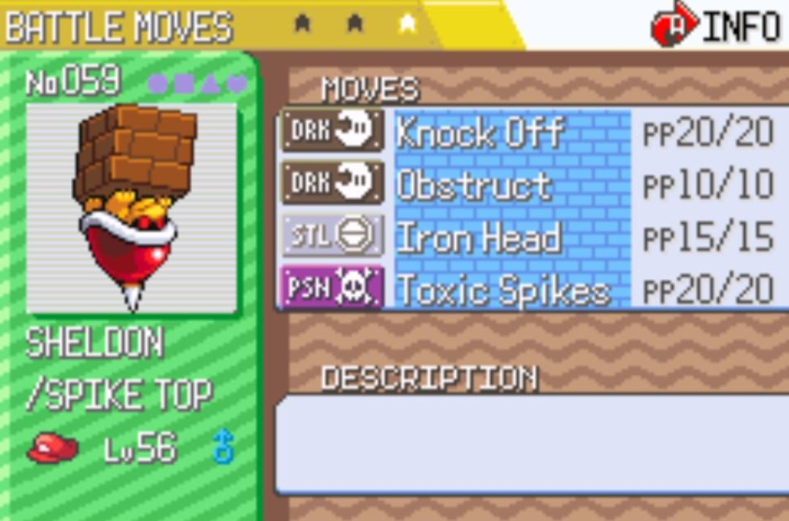

Review

Okay, so since my gaming alter ego is technically called "Top ROMen," I feel somewhat compelled to review at least one ROM hack. What better choice than Super Mariomon, a game that combines two of Nintendo's (and all of gaming history's) most iconic IPs?
This is a ROM hack of Pokémon Emerald, but it plays more like a FRLG hack (it's got the berry pouch and TM case), with the exception of the animated sprites, which is always a lovely and welcome touch.
So, you start out in Mario's Pad, where in classic Paper Mario TTYD fashion, he's at home chillin' with Luigi. E. Gadd informs you that there is a huge capture craze/competition going on (captures are what the "Pokémon" in this game are called to make the internal logic of them not technically being Pokémon gel), and you quickly receive your first mon from Professor E. Gadd. Your choice of starter captures are a Blooper, a Piranha Plant, or a Bob-Omb.
I've always thought they should make a game like this. Even as a kid, I used to imagine that the weaker versions of Mario enemies would evolve into the stronger ones, and I'd draw up movesets for them. There are enough of these enemy progressions that the devs of this hack were able to fill a dex with 151 captures.
This game is a complete love letter to Mario fans. Anyone who's familiar with Mario RPG games expects some witty and offbeat humor, and this game delivers. There's a part of the game where Luigi goes off with Bowser and basically becomes a motivational life coach who tries to cheer him up and teach him that it's all just a game, for instance. I won't spoil too much else.
The game is split up into 8 different "worlds," all hand-picked directly from the Mario franchise; we have a whole WarioWare world, where you get to battle Ashley, Jimmy T., and Mona! And, the game completely breaks universe here and... sorry, I can't spoil too much. But it's epic.
The acro bike gets replaced with a rideable Yoshi, and the mach bike gets replaced with a freakin' Go Kart, and in the ultimate route leading up to the climax, the player gets to drive through Rainbow road! It's freakin' sick, to put it mildly. The game is so chalk-full of these throwbacks and it feels warm and cozy, but it's more than just nostalgia.
The devs also managed to fill an entire dex with custom entries for each capture, something which adds to the immersion, and the dex entries are oftentimes witty and worth a read.
No new moves or abilities are added to the game, but the fact that Green Hill Zone is included in the post-game and Sonic The Freakin' Hedgehog is the 151st capture more than makes up for it. The Pokémon series, spanning over 25 years now, has left the creators of this game with more than a full palette of tools to draw from, and this game uses the upgraded battle engine found in Inclement Emerald, Rad Red, Unbound, and other such masterpieces.
Now, how is the sound design? Well, every cry feels natural; most of them are drawn from the actual sounds the enemies make in-game, and it's cool to hear those; but, the soundtrack is on a whole 'nother level! Many of the songs in this game have a treat for those willing to stand around on the overworld and just listen to them; they go from simple but enjoyable GBA soundfont tunes, to full on 8-bit Famitracker overtures. It's epic and words can't quite describe it.
Final Verdict
Super Mariomon is full of heart and goes the extra mile in almost every regard. I would put this in my top 5 Pokémon ROM hacks, which is saying something since this is a genre I've thoroughly played the shit out of. The litany of homages are well-done and never feel forced. The roster of captures here is diverse, and the game has even garnered a pretty strong competitive scene with a decent metagame.
So, as a number? I'd give this a solid 9.5/10. It's damn-near perfect, and seeing as new features such as a Nuzlocke mode and Hard mode are being planned, I can easily see myself bumping this up to a perfect score when they drop.